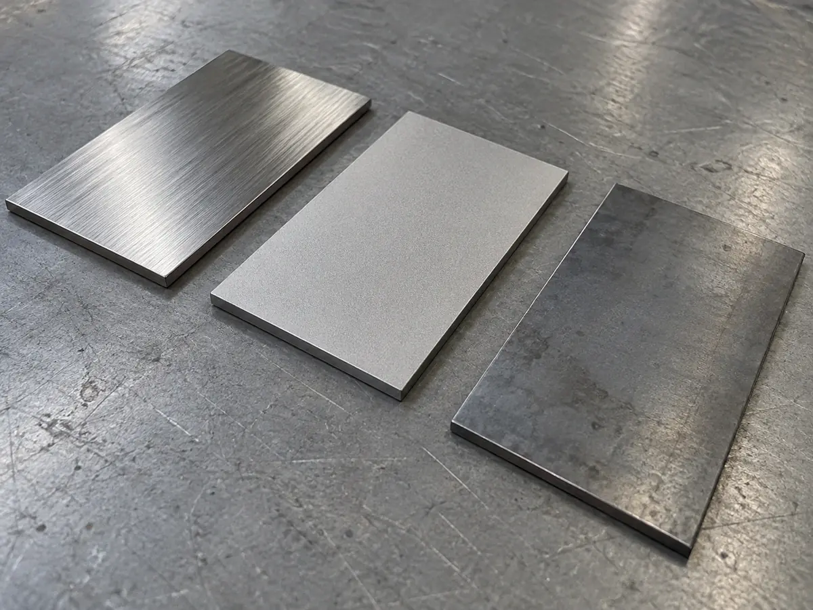
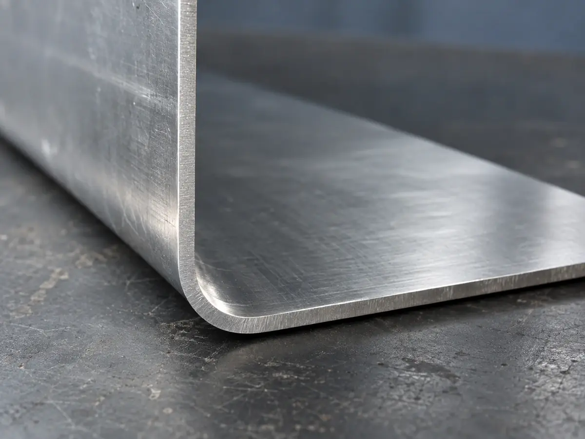

材質と板厚
8つの材質と8つの板厚の組み合わせの可否を、○△×の表で示します。表面処理の扱いと、見積もりでよく出る用語もここにまとめました。
- 材質
- 8種
- 板厚
- t0.5–6.0mm・8段
- 表面処理
- 6種（自社2・協力先4）
- 鉄
- SPCC
SS400
SECC - ステンレス
- SUS304
SUS430 - アルミ
- A5052
A1050 - 銅
- C1100
材質 × 板厚
材質名か板厚を押すと、その行と列を十字に強調します。両方を選ぶと、交わるマスの可否を表の下に表示します。
- 切断・曲げとも可
- 要相談（切断のみ・形状・数量による）
- 不可
| 材質 ＼ 板厚(mm) | ||||||||
|---|---|---|---|---|---|---|---|---|
| 板厚0.5mm: 対応 | 板厚0.8mm: 対応 | 板厚1.0mm: 対応 | 板厚1.6mm: 対応 | 板厚2.0mm: 対応 | 板厚3.2mm: 対応 | 板厚4.5mm: 不可 | 板厚6.0mm: 不可 | |
| 板厚0.5mm: 不可 | 板厚0.8mm: 不可 | 板厚1.0mm: 不可 | 板厚1.6mm: 要相談 | 板厚2.0mm: 要相談 | 板厚3.2mm: 対応 | 板厚4.5mm: 要相談 | 板厚6.0mm: 要相談 | |
| 板厚0.5mm: 対応 | 板厚0.8mm: 対応 | 板厚1.0mm: 対応 | 板厚1.6mm: 対応 | 板厚2.0mm: 対応 | 板厚3.2mm: 要相談 | 板厚4.5mm: 不可 | 板厚6.0mm: 不可 | |
| 板厚0.5mm: 対応 | 板厚0.8mm: 対応 | 板厚1.0mm: 対応 | 板厚1.6mm: 対応 | 板厚2.0mm: 対応 | 板厚3.2mm: 要相談 | 板厚4.5mm: 要相談 | 板厚6.0mm: 不可 | |
| 板厚0.5mm: 対応 | 板厚0.8mm: 対応 | 板厚1.0mm: 対応 | 板厚1.6mm: 対応 | 板厚2.0mm: 対応 | 板厚3.2mm: 要相談 | 板厚4.5mm: 不可 | 板厚6.0mm: 不可 | |
| 板厚0.5mm: 不可 | 板厚0.8mm: 対応 | 板厚1.0mm: 対応 | 板厚1.6mm: 対応 | 板厚2.0mm: 対応 | 板厚3.2mm: 要相談 | 板厚4.5mm: 不可 | 板厚6.0mm: 不可 | |
| 板厚0.5mm: 不可 | 板厚0.8mm: 対応 | 板厚1.0mm: 対応 | 板厚1.6mm: 対応 | 板厚2.0mm: 対応 | 板厚3.2mm: 要相談 | 板厚4.5mm: 不可 | 板厚6.0mm: 不可 | |
| 板厚0.5mm: 要相談 | 板厚0.8mm: 要相談 | 板厚1.0mm: 要相談 | 板厚1.6mm: 要相談 | 板厚2.0mm: 不可 | 板厚3.2mm: 不可 | 板厚4.5mm: 不可 | 板厚6.0mm: 不可 |
曲げられる板厚は、鉄 t3.2・ステンレスとアルミ t3.0 までです。それを超える板厚は切断のみのため△にしています。銅は切断だけを要相談で受けます。×の組み合わせでも、代わりの材質を提案できることがあります。
表面処理の扱い
| 処理 | 対象の材質 | 扱い | 納期への影響 |
|---|---|---|---|
| バリ取り | すべて | 自社（標準で実施） | なし |
| ヘアライン仕上げ | ステンレス | 自社 | +1〜2営業日 |
| 粉体塗装・焼付塗装 | 鉄・アルミ | 協力先へ手配 | +5〜7営業日 |
| 亜鉛めっき | 鉄 | 協力先へ手配 | +5〜7営業日 |
| アルマイト | アルミ | 協力先へ手配 | +5〜7営業日 |
| 電解研磨 | ステンレス | 協力先へ手配 | 要相談 |
協力先の処理は、色・膜厚の指定を図面に書いてください。協力先の名前はここには載せていません。

曲げRR ≒ 板厚（t）
ヘアライン仕上げステンレス・自社
切断した縁のバリバリ取りは標準
見積もりでよく出る用語
- 曲げR
- 曲げた角の内側の丸みの半径です。板厚と同じくらいが目安で、小さくしすぎると割れの原因になります。
- バリ
- 切断や穴あけのあと、縁にできる小さな出っ張りです。手で触れる部品は、取り除く範囲を図面で指示してください。
公差の読み方
公差は、寸法がどこまでずれてよいかの幅です。「100 ±0.2」なら、99.8〜100.2mm の範囲に入れば合格です。
工程ごとの公差の目安は 加工別の仕様表 にあります。目安で、保証値ではありません。
次に読む見積もりから納品まで（7段階と納期の目安）
材質が未定でも、用途が分かれば見積もりできます。
見積もりを依頼する（見本）